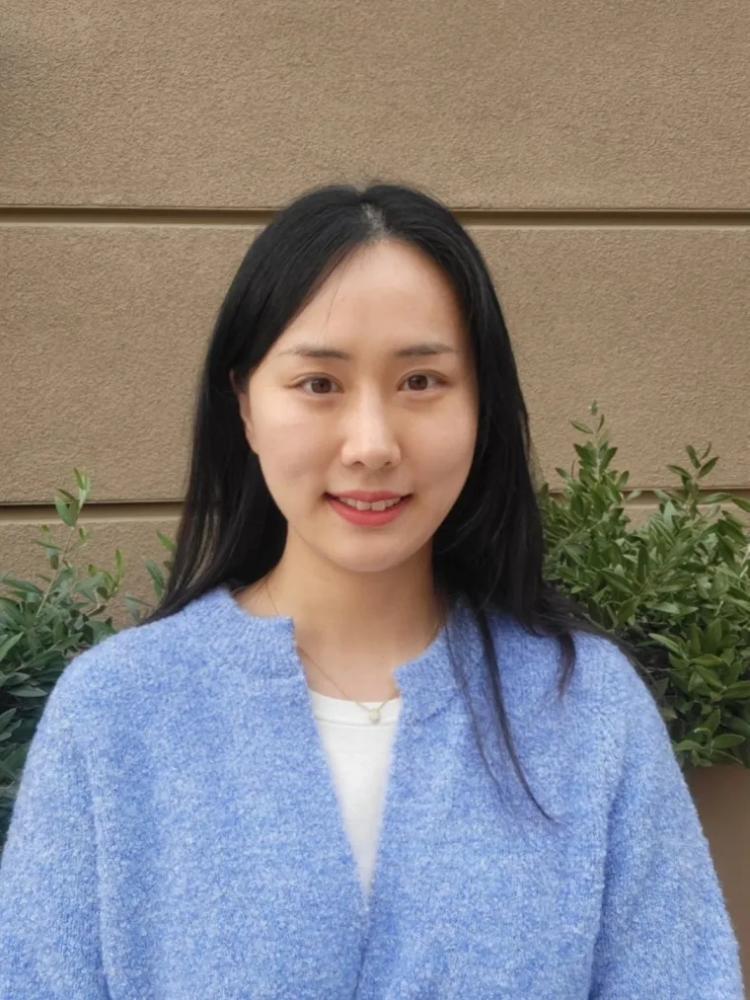
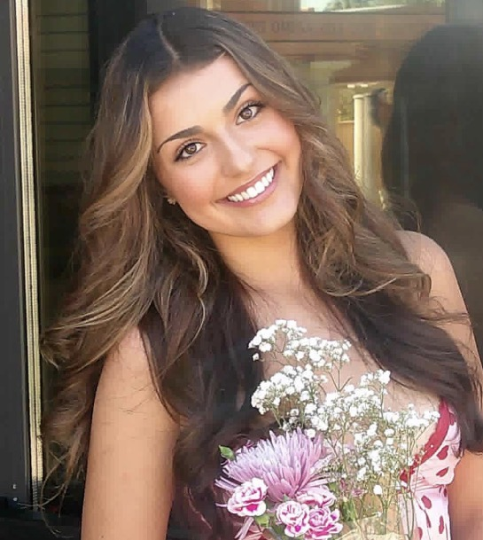
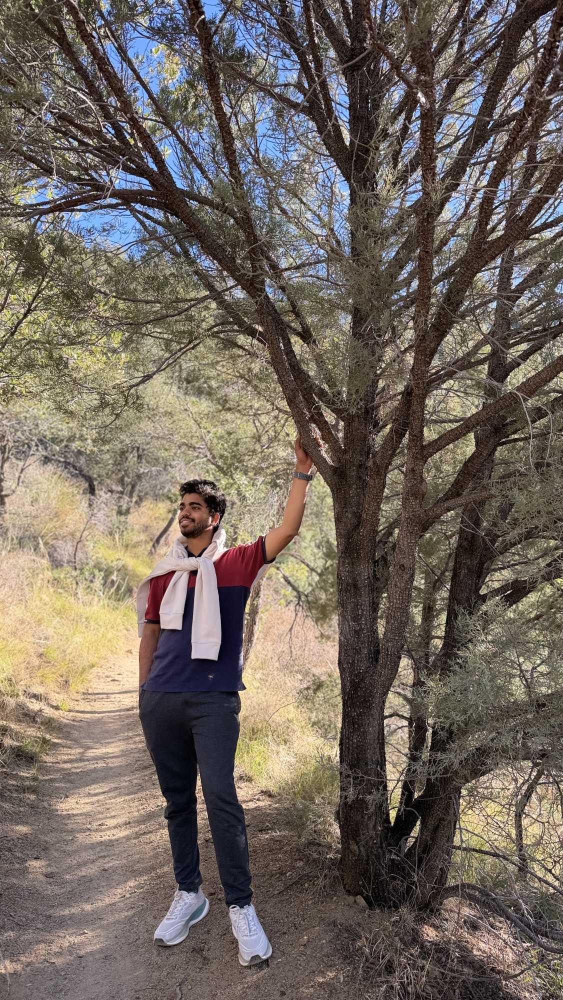
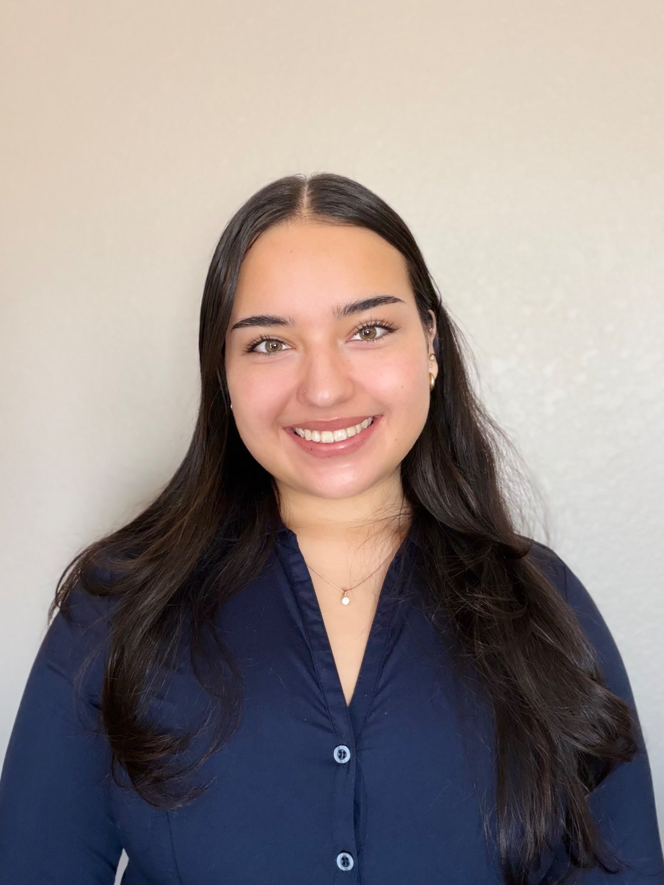
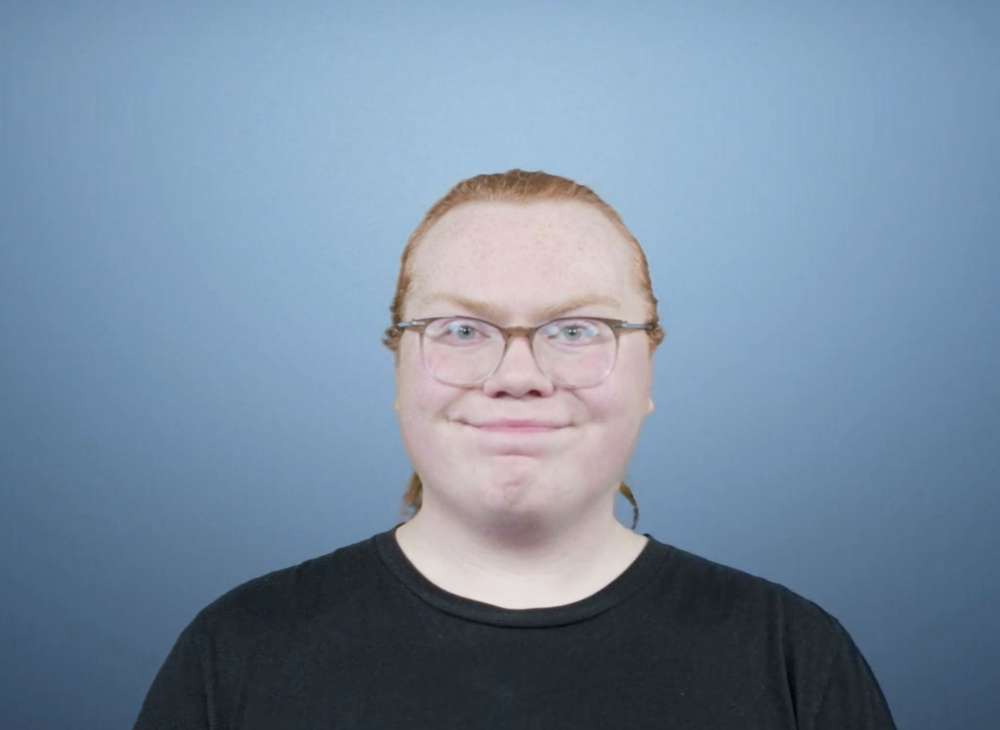

Our People
The researchers and team members driving our mission to advance pain neuroscience.
Our Researchers

Principal Investigator & Lab Director
Assistant Professor at the University of Arizona College of Nursing and BIO5 Institute. Ph.D. from Duke University. Her research focuses on noninvasive neuromodulation for chronic pain in older adults, utilizing advanced neuroimaging techniques and transcranial electrical stimulation approaches.
Research Coordinator
Ut enim ad minim veniam, quis nostrud exercitation ullamco laboris nisi ut aliquip ex ea commodo consequat. Duis aute irure dolor in reprehenderit in voluptate velit esse cillum dolore eu fugiat nulla pariatur.
Graduate Research Assistant
Duis aute irure dolor in reprehenderit in voluptate velit esse cillum dolore eu fugiat nulla pariatur. Excepteur sint occaecat cupidatat non proident, sunt in culpa qui officia deserunt mollit anim id est laborum.

Undergraduate Research Assistant 1
Kailey Harrison is an Undergraduate Research Assistant in the Pain Neuroscience Research Lab. She assists with conducting intervention sessions and supporting the research team’s ongoing research activities. Through her work in the lab, she is gaining valuable experience in clinical research and developing a deeper understanding of pain neuroscience.
Kailey hopes to continue building her research and clinical experience as she pursues a career as a Pediatric Nurse Practitioner, with the goal of applying evidence-based research to improve healthcare outcomes for children and their families.

Graduate Research Data Analyst
Moksha Talapaneni is a graduate student pursuing a Master's degree in Data Science at the University of Arizona. His interests lie at the intersection of data science, neuroscience, neuroimaging, and healthcare research, with a focus on machine learning, neuroimaging data analysis, and computational approaches to understanding language and brain function.
In addition to his research work, Moksha works with the City of Tucson's Information Technology Department, supporting the GIS and Governance, Risk, and Compliance (GRC) teams. His responsibilities include data analysis, geographic information systems, and accessibility compliance initiatives.
He holds a bachelor's degree from Sri Sathya Sai Institute of Higher Learning in India and brings approximately two years of combined research and professional experience. Through his work with the Pain Neuroscience Research Lab, he aims to apply computational and analytical methods to support meaningful advances in pain research and contribute to data-driven healthcare discoveries.

Undergraduate Research assistant 1
Rafaella Noriega-Martos is an undergraduate student at the University of Arizona pursuing a Bachelor of Science in Nursing and a Bachelor of Arts in Spanish, with an expected graduation date of May 2028. She is interested in pursuing a Master’s degree as a Psychiatric Mental Health Nurse Practitioner and, ultimately, a PhD in Nursing to further her interests in clinical research and evidence-based healthcare.
With a strong interest in neuroscience and neurocognitive psychology, Rafaella is particularly interested in understanding how research can inform and improve patient care. Her academic interests include the intersection of neuroscience, mental health, pain, and nursing practice.
As an Undergraduate Research Assistant, Rafaella contributes primarily to the RESHAPE TKA research study, which investigates the use of transcranial direct current stimulation (tDCS) combined with exercise to improve persistent pain in individuals following total knee arthroplasty. Through her involvement in the study, she is gaining hands-on experience in clinical research while developing a deeper understanding of how neuroscience-based interventions can be translated into healthcare.

Undergraduate Research assistant 1
Timothy Staats is an undergraduate student at the University of Arizona, pursuing a Bachelor of Science in Nursing, with an expected graduation date of May 2030! Timothy has always been enamored by healthcare and medical research, that is the reason is so excited to have this opportunity to work with the Pain Neuroscience Research, here at the University of Arizona College of Nursing.
During high school, Timothy completed coursework and earned his Certified Clinical Medical Assistant (CCMA) certification. He also participated in clinical externships, where he gained hands-on experience working directly with a diverse population of patients in an urgent care setting.
As an Undergraduate Research Assistant, Timothy is excited to expand his clinical research experience and develop a deeper understanding of how research can contribute to improving patient care and healthcare outcomes.